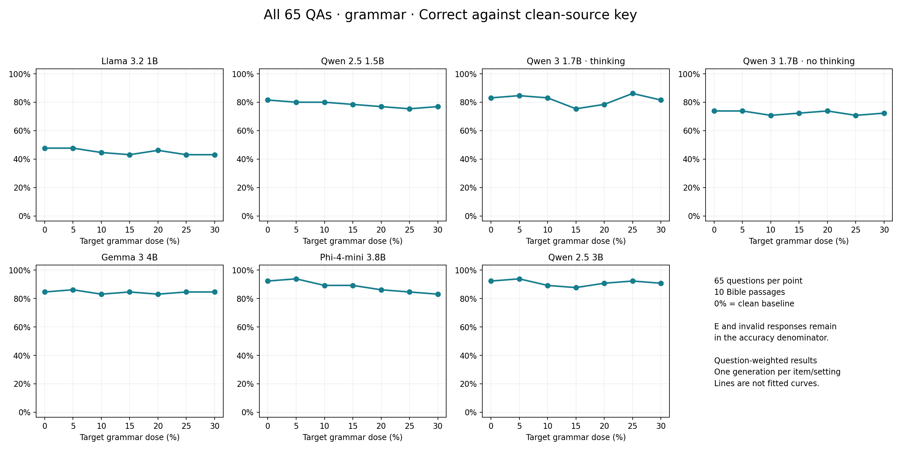
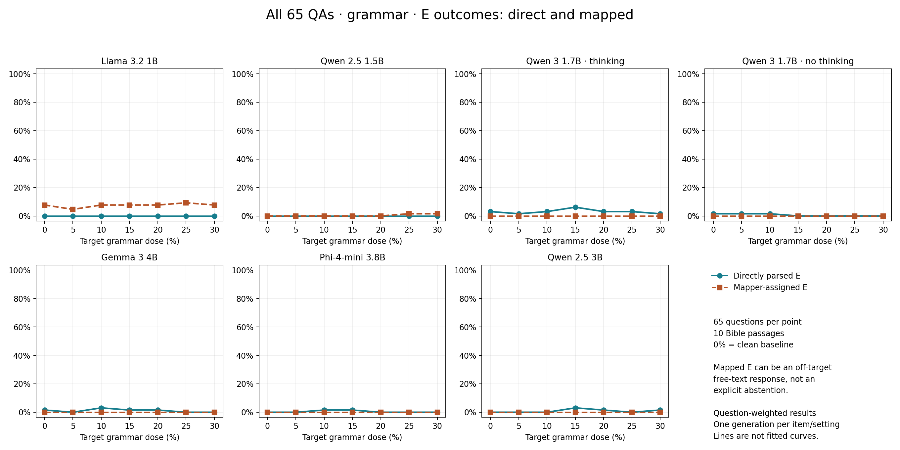

65 active questions × 7 conditions × 7 reader settings = 3,185 responses. The completed 1 Kings 13, 2 Kings 6–7 and 2 Chronicles 26 runs contribute 1,127 preserved responses. Seven remaining passages add 2,058 responses.
Conditions: clean, 5%, 10%, 15%, 20%, 25% and 30% grammar. Doses count affected clean Chinese source characters, within ±2 percentage points. The versions are independently selected. The grammar bank uses a soft preference of 30% misselection / 70% misordering by error instances.
Every run uses the same model weights, reader-specific prompts, temperature 0, 8,192-token context and 2,500-token generation cap including thinking. Accuracy uses the clean-source key; E and invalid responses remain in its denominator. All-65 results weight questions equally, so passages with more questions contribute more. Individual passage samples range from 2 to 12 questions. One generation per item and setting; no fitted dose–response curve.

Correct answers out of 65. A change of one answer is 1.54 percentage points.
| Reader | 0% | 5% | 10% | 15% | 20% | 25% | 30% |
|---|---|---|---|---|---|---|---|
| Llama 3.2 1B | 31/65 47.7% | 31/65 47.7% | 29/65 44.6% | 28/65 43.1% | 30/65 46.2% | 28/65 43.1% | 28/65 43.1% |
| Qwen 2.5 1.5B | 53/65 81.5% | 52/65 80.0% | 52/65 80.0% | 51/65 78.5% | 50/65 76.9% | 49/65 75.4% | 50/65 76.9% |
| Qwen 3 1.7B · thinking | 54/65 83.1% | 55/65 84.6% | 54/65 83.1% | 49/65 75.4% | 51/65 78.5% | 56/65 86.2% | 53/65 81.5% |
| Qwen 3 1.7B · no thinking | 48/65 73.8% | 48/65 73.8% | 46/65 70.8% | 47/65 72.3% | 48/65 73.8% | 46/65 70.8% | 47/65 72.3% |
| Gemma 3 4B | 55/65 84.6% | 56/65 86.2% | 54/65 83.1% | 55/65 84.6% | 54/65 83.1% | 55/65 84.6% | 55/65 84.6% |
| Phi-4-mini 3.8B | 60/65 92.3% | 61/65 93.8% | 58/65 89.2% | 58/65 89.2% | 56/65 86.2% | 55/65 84.6% | 54/65 83.1% |
| Qwen 2.5 3B | 60/65 92.3% | 61/65 93.8% | 58/65 89.2% | 57/65 87.7% | 59/65 90.8% | 60/65 92.3% | 59/65 90.8% |

Each entry is correct / wrong A–D / direct E / mapped E / invalid, out of 65.
| Reader | 0% | 5% | 10% | 15% | 20% | 25% | 30% |
|---|---|---|---|---|---|---|---|
| Llama 3.2 1B | 31 / 29 / 0 / 5 / 0 | 31 / 31 / 0 / 3 / 0 | 29 / 31 / 0 / 5 / 0 | 28 / 32 / 0 / 5 / 0 | 30 / 30 / 0 / 5 / 0 | 28 / 31 / 0 / 6 / 0 | 28 / 32 / 0 / 5 / 0 |
| Qwen 2.5 1.5B | 53 / 12 / 0 / 0 / 0 | 52 / 13 / 0 / 0 / 0 | 52 / 13 / 0 / 0 / 0 | 51 / 14 / 0 / 0 / 0 | 50 / 15 / 0 / 0 / 0 | 49 / 15 / 0 / 1 / 0 | 50 / 14 / 0 / 1 / 0 |
| Qwen 3 1.7B · thinking | 54 / 9 / 2 / 0 / 0 | 55 / 8 / 1 / 0 / 1 | 54 / 9 / 2 / 0 / 0 | 49 / 10 / 4 / 0 / 2 | 51 / 11 / 2 / 0 / 1 | 56 / 7 / 2 / 0 / 0 | 53 / 11 / 1 / 0 / 0 |
| Qwen 3 1.7B · no thinking | 48 / 16 / 1 / 0 / 0 | 48 / 16 / 1 / 0 / 0 | 46 / 18 / 1 / 0 / 0 | 47 / 18 / 0 / 0 / 0 | 48 / 17 / 0 / 0 / 0 | 46 / 19 / 0 / 0 / 0 | 47 / 18 / 0 / 0 / 0 |
| Gemma 3 4B | 55 / 9 / 1 / 0 / 0 | 56 / 9 / 0 / 0 / 0 | 54 / 9 / 2 / 0 / 0 | 55 / 9 / 1 / 0 / 0 | 54 / 10 / 1 / 0 / 0 | 55 / 10 / 0 / 0 / 0 | 55 / 10 / 0 / 0 / 0 |
| Phi-4-mini 3.8B | 60 / 5 / 0 / 0 / 0 | 61 / 4 / 0 / 0 / 0 | 58 / 6 / 1 / 0 / 0 | 58 / 6 / 1 / 0 / 0 | 56 / 9 / 0 / 0 / 0 | 55 / 10 / 0 / 0 / 0 | 54 / 11 / 0 / 0 / 0 |
| Qwen 2.5 3B | 60 / 5 / 0 / 0 / 0 | 61 / 4 / 0 / 0 / 0 | 58 / 7 / 0 / 0 / 0 | 57 / 6 / 2 / 0 / 0 | 59 / 5 / 1 / 0 / 0 | 60 / 5 / 0 / 0 / 0 | 59 / 5 / 1 / 0 / 0 |
The established GPT-4.1-mini mapper receives only unmatched nonempty primary-reader answers and choices. An E assigned to an off-target free-text answer is not necessarily intentional abstention. No random fallback is used.
| Reader | 0% | 5% | 10% | 15% | 20% | 25% | 30% |
|---|---|---|---|---|---|---|---|
| Llama 3.2 1B | 0/8 0.0% | 0/8 0.0% | 1/8 12.5% | 1/8 12.5% | 1/8 12.5% | 2/8 25.0% | 1/8 12.5% |
| Qwen 2.5 1.5B | 7/8 87.5% | 7/8 87.5% | 7/8 87.5% | 7/8 87.5% | 7/8 87.5% | 6/8 75.0% | 6/8 75.0% |
| Qwen 3 1.7B · thinking | 6/8 75.0% | 7/8 87.5% | 6/8 75.0% | 5/8 62.5% | 5/8 62.5% | 6/8 75.0% | 6/8 75.0% |
| Qwen 3 1.7B · no thinking | 6/8 75.0% | 6/8 75.0% | 5/8 62.5% | 5/8 62.5% | 5/8 62.5% | 5/8 62.5% | 5/8 62.5% |
| Gemma 3 4B | 6/8 75.0% | 7/8 87.5% | 5/8 62.5% | 6/8 75.0% | 5/8 62.5% | 6/8 75.0% | 7/8 87.5% |
| Phi-4-mini 3.8B | 8/8 100.0% | 8/8 100.0% | 8/8 100.0% | 7/8 87.5% | 7/8 87.5% | 7/8 87.5% | 7/8 87.5% |
| Qwen 2.5 3B | 8/8 100.0% | 8/8 100.0% | 8/8 100.0% | 7/8 87.5% | 7/8 87.5% | 8/8 100.0% | 7/8 87.5% |
Passages, questions, choices, raw answers and thinking traces
| Reader | 0% | 5% | 10% | 15% | 20% | 25% | 30% |
|---|---|---|---|---|---|---|---|
| Llama 3.2 1B | 5/6 83.3% | 5/6 83.3% | 5/6 83.3% | 6/6 100.0% | 4/6 66.7% | 6/6 100.0% | 4/6 66.7% |
| Qwen 2.5 1.5B | 2/6 33.3% | 2/6 33.3% | 2/6 33.3% | 2/6 33.3% | 2/6 33.3% | 2/6 33.3% | 3/6 50.0% |
| Qwen 3 1.7B · thinking | 5/6 83.3% | 5/6 83.3% | 5/6 83.3% | 3/6 50.0% | 6/6 100.0% | 6/6 100.0% | 5/6 83.3% |
| Qwen 3 1.7B · no thinking | 4/6 66.7% | 4/6 66.7% | 4/6 66.7% | 4/6 66.7% | 6/6 100.0% | 5/6 83.3% | 5/6 83.3% |
| Gemma 3 4B | 5/6 83.3% | 5/6 83.3% | 5/6 83.3% | 5/6 83.3% | 6/6 100.0% | 6/6 100.0% | 5/6 83.3% |
| Phi-4-mini 3.8B | 6/6 100.0% | 6/6 100.0% | 6/6 100.0% | 6/6 100.0% | 6/6 100.0% | 6/6 100.0% | 4/6 66.7% |
| Qwen 2.5 3B | 4/6 66.7% | 4/6 66.7% | 4/6 66.7% | 4/6 66.7% | 4/6 66.7% | 4/6 66.7% | 4/6 66.7% |
Passages, questions, choices, raw answers and thinking traces
| Reader | 0% | 5% | 10% | 15% | 20% | 25% | 30% |
|---|---|---|---|---|---|---|---|
| Llama 3.2 1B | 3/6 50.0% | 4/6 66.7% | 4/6 66.7% | 2/6 33.3% | 4/6 66.7% | 3/6 50.0% | 3/6 50.0% |
| Qwen 2.5 1.5B | 5/6 83.3% | 5/6 83.3% | 5/6 83.3% | 4/6 66.7% | 4/6 66.7% | 5/6 83.3% | 5/6 83.3% |
| Qwen 3 1.7B · thinking | 5/6 83.3% | 5/6 83.3% | 5/6 83.3% | 6/6 100.0% | 5/6 83.3% | 5/6 83.3% | 5/6 83.3% |
| Qwen 3 1.7B · no thinking | 5/6 83.3% | 6/6 100.0% | 6/6 100.0% | 6/6 100.0% | 6/6 100.0% | 6/6 100.0% | 6/6 100.0% |
| Gemma 3 4B | 5/6 83.3% | 5/6 83.3% | 5/6 83.3% | 5/6 83.3% | 5/6 83.3% | 5/6 83.3% | 5/6 83.3% |
| Phi-4-mini 3.8B | 5/6 83.3% | 5/6 83.3% | 5/6 83.3% | 5/6 83.3% | 5/6 83.3% | 5/6 83.3% | 5/6 83.3% |
| Qwen 2.5 3B | 6/6 100.0% | 6/6 100.0% | 6/6 100.0% | 6/6 100.0% | 6/6 100.0% | 6/6 100.0% | 6/6 100.0% |
Passages, questions, choices, raw answers and thinking traces
| Reader | 0% | 5% | 10% | 15% | 20% | 25% | 30% |
|---|---|---|---|---|---|---|---|
| Llama 3.2 1B | 3/9 33.3% | 4/9 44.4% | 3/9 33.3% | 3/9 33.3% | 3/9 33.3% | 3/9 33.3% | 4/9 44.4% |
| Qwen 2.5 1.5B | 7/9 77.8% | 6/9 66.7% | 6/9 66.7% | 7/9 77.8% | 7/9 77.8% | 6/9 66.7% | 6/9 66.7% |
| Qwen 3 1.7B · thinking | 6/9 66.7% | 7/9 77.8% | 7/9 77.8% | 6/9 66.7% | 6/9 66.7% | 7/9 77.8% | 6/9 66.7% |
| Qwen 3 1.7B · no thinking | 5/9 55.6% | 5/9 55.6% | 5/9 55.6% | 5/9 55.6% | 5/9 55.6% | 4/9 44.4% | 4/9 44.4% |
| Gemma 3 4B | 6/9 66.7% | 6/9 66.7% | 6/9 66.7% | 6/9 66.7% | 6/9 66.7% | 6/9 66.7% | 6/9 66.7% |
| Phi-4-mini 3.8B | 7/9 77.8% | 7/9 77.8% | 7/9 77.8% | 7/9 77.8% | 7/9 77.8% | 7/9 77.8% | 7/9 77.8% |
| Qwen 2.5 3B | 7/9 77.8% | 7/9 77.8% | 7/9 77.8% | 7/9 77.8% | 7/9 77.8% | 7/9 77.8% | 7/9 77.8% |
Passages, questions, choices, raw answers and thinking traces
| Reader | 0% | 5% | 10% | 15% | 20% | 25% | 30% |
|---|---|---|---|---|---|---|---|
| Llama 3.2 1B | 0/2 0.0% | 0/2 0.0% | 0/2 0.0% | 0/2 0.0% | 0/2 0.0% | 0/2 0.0% | 0/2 0.0% |
| Qwen 2.5 1.5B | 1/2 50.0% | 1/2 50.0% | 1/2 50.0% | 1/2 50.0% | 1/2 50.0% | 1/2 50.0% | 1/2 50.0% |
| Qwen 3 1.7B · thinking | 2/2 100.0% | 2/2 100.0% | 1/2 50.0% | 1/2 50.0% | 1/2 50.0% | 1/2 50.0% | 2/2 100.0% |
| Qwen 3 1.7B · no thinking | 1/2 50.0% | 1/2 50.0% | 1/2 50.0% | 1/2 50.0% | 1/2 50.0% | 1/2 50.0% | 1/2 50.0% |
| Gemma 3 4B | 2/2 100.0% | 2/2 100.0% | 2/2 100.0% | 2/2 100.0% | 2/2 100.0% | 2/2 100.0% | 2/2 100.0% |
| Phi-4-mini 3.8B | 2/2 100.0% | 2/2 100.0% | 1/2 50.0% | 2/2 100.0% | 2/2 100.0% | 1/2 50.0% | 2/2 100.0% |
| Qwen 2.5 3B | 2/2 100.0% | 2/2 100.0% | 2/2 100.0% | 2/2 100.0% | 2/2 100.0% | 2/2 100.0% | 2/2 100.0% |
Passages, questions, choices, raw answers and thinking traces
| Reader | 0% | 5% | 10% | 15% | 20% | 25% | 30% |
|---|---|---|---|---|---|---|---|
| Llama 3.2 1B | 2/3 66.7% | 2/3 66.7% | 2/3 66.7% | 1/3 33.3% | 2/3 66.7% | 2/3 66.7% | 2/3 66.7% |
| Qwen 2.5 1.5B | 2/3 66.7% | 2/3 66.7% | 2/3 66.7% | 2/3 66.7% | 2/3 66.7% | 2/3 66.7% | 2/3 66.7% |
| Qwen 3 1.7B · thinking | 2/3 66.7% | 2/3 66.7% | 2/3 66.7% | 2/3 66.7% | 2/3 66.7% | 2/3 66.7% | 2/3 66.7% |
| Qwen 3 1.7B · no thinking | 2/3 66.7% | 2/3 66.7% | 2/3 66.7% | 2/3 66.7% | 2/3 66.7% | 2/3 66.7% | 2/3 66.7% |
| Gemma 3 4B | 2/3 66.7% | 2/3 66.7% | 2/3 66.7% | 2/3 66.7% | 2/3 66.7% | 2/3 66.7% | 2/3 66.7% |
| Phi-4-mini 3.8B | 3/3 100.0% | 3/3 100.0% | 3/3 100.0% | 3/3 100.0% | 2/3 66.7% | 2/3 66.7% | 2/3 66.7% |
| Qwen 2.5 3B | 3/3 100.0% | 3/3 100.0% | 3/3 100.0% | 3/3 100.0% | 3/3 100.0% | 3/3 100.0% | 3/3 100.0% |
Passages, questions, choices, raw answers and thinking traces
| Reader | 0% | 5% | 10% | 15% | 20% | 25% | 30% |
|---|---|---|---|---|---|---|---|
| Llama 3.2 1B | 0/2 0.0% | 0/2 0.0% | 0/2 0.0% | 0/2 0.0% | 0/2 0.0% | 0/2 0.0% | 0/2 0.0% |
| Qwen 2.5 1.5B | 2/2 100.0% | 2/2 100.0% | 2/2 100.0% | 2/2 100.0% | 2/2 100.0% | 2/2 100.0% | 2/2 100.0% |
| Qwen 3 1.7B · thinking | 2/2 100.0% | 2/2 100.0% | 2/2 100.0% | 2/2 100.0% | 2/2 100.0% | 2/2 100.0% | 2/2 100.0% |
| Qwen 3 1.7B · no thinking | 2/2 100.0% | 2/2 100.0% | 2/2 100.0% | 2/2 100.0% | 2/2 100.0% | 2/2 100.0% | 2/2 100.0% |
| Gemma 3 4B | 2/2 100.0% | 2/2 100.0% | 2/2 100.0% | 2/2 100.0% | 2/2 100.0% | 2/2 100.0% | 2/2 100.0% |
| Phi-4-mini 3.8B | 2/2 100.0% | 2/2 100.0% | 2/2 100.0% | 2/2 100.0% | 2/2 100.0% | 2/2 100.0% | 2/2 100.0% |
| Qwen 2.5 3B | 2/2 100.0% | 2/2 100.0% | 2/2 100.0% | 1/2 50.0% | 2/2 100.0% | 2/2 100.0% | 2/2 100.0% |
Passages, questions, choices, raw answers and thinking traces
| Reader | 0% | 5% | 10% | 15% | 20% | 25% | 30% |
|---|---|---|---|---|---|---|---|
| Llama 3.2 1B | 4/6 66.7% | 3/6 50.0% | 3/6 50.0% | 3/6 50.0% | 4/6 66.7% | 3/6 50.0% | 4/6 66.7% |
| Qwen 2.5 1.5B | 6/6 100.0% | 6/6 100.0% | 6/6 100.0% | 6/6 100.0% | 6/6 100.0% | 6/6 100.0% | 6/6 100.0% |
| Qwen 3 1.7B · thinking | 5/6 83.3% | 4/6 66.7% | 6/6 100.0% | 5/6 83.3% | 5/6 83.3% | 6/6 100.0% | 6/6 100.0% |
| Qwen 3 1.7B · no thinking | 4/6 66.7% | 4/6 66.7% | 4/6 66.7% | 4/6 66.7% | 4/6 66.7% | 4/6 66.7% | 4/6 66.7% |
| Gemma 3 4B | 6/6 100.0% | 6/6 100.0% | 6/6 100.0% | 6/6 100.0% | 5/6 83.3% | 5/6 83.3% | 5/6 83.3% |
| Phi-4-mini 3.8B | 6/6 100.0% | 6/6 100.0% | 6/6 100.0% | 6/6 100.0% | 6/6 100.0% | 6/6 100.0% | 6/6 100.0% |
| Qwen 2.5 3B | 6/6 100.0% | 6/6 100.0% | 6/6 100.0% | 6/6 100.0% | 6/6 100.0% | 6/6 100.0% | 6/6 100.0% |
Passages, questions, choices, raw answers and thinking traces
| Reader | 0% | 5% | 10% | 15% | 20% | 25% | 30% |
|---|---|---|---|---|---|---|---|
| Llama 3.2 1B | 7/12 58.3% | 6/12 50.0% | 5/12 41.7% | 6/12 50.0% | 5/12 41.7% | 4/12 33.3% | 5/12 41.7% |
| Qwen 2.5 1.5B | 11/12 91.7% | 11/12 91.7% | 11/12 91.7% | 10/12 83.3% | 9/12 75.0% | 9/12 75.0% | 9/12 75.0% |
| Qwen 3 1.7B · thinking | 11/12 91.7% | 10/12 83.3% | 10/12 83.3% | 9/12 75.0% | 9/12 75.0% | 10/12 83.3% | 8/12 66.7% |
| Qwen 3 1.7B · no thinking | 10/12 83.3% | 9/12 75.0% | 8/12 66.7% | 9/12 75.0% | 7/12 58.3% | 7/12 58.3% | 7/12 58.3% |
| Gemma 3 4B | 10/12 83.3% | 10/12 83.3% | 10/12 83.3% | 10/12 83.3% | 10/12 83.3% | 10/12 83.3% | 10/12 83.3% |
| Phi-4-mini 3.8B | 12/12 100.0% | 12/12 100.0% | 11/12 91.7% | 11/12 91.7% | 10/12 83.3% | 10/12 83.3% | 10/12 83.3% |
| Qwen 2.5 3B | 12/12 100.0% | 12/12 100.0% | 10/12 83.3% | 11/12 91.7% | 12/12 100.0% | 12/12 100.0% | 12/12 100.0% |
Passages, questions, choices, raw answers and thinking traces
| Reader | 0% | 5% | 10% | 15% | 20% | 25% | 30% |
|---|---|---|---|---|---|---|---|
| Llama 3.2 1B | 7/11 63.6% | 7/11 63.6% | 6/11 54.5% | 6/11 54.5% | 7/11 63.6% | 5/11 45.5% | 5/11 45.5% |
| Qwen 2.5 1.5B | 10/11 90.9% | 10/11 90.9% | 10/11 90.9% | 10/11 90.9% | 10/11 90.9% | 10/11 90.9% | 10/11 90.9% |
| Qwen 3 1.7B · thinking | 10/11 90.9% | 11/11 100.0% | 10/11 90.9% | 10/11 90.9% | 10/11 90.9% | 11/11 100.0% | 11/11 100.0% |
| Qwen 3 1.7B · no thinking | 9/11 81.8% | 9/11 81.8% | 9/11 81.8% | 9/11 81.8% | 10/11 90.9% | 10/11 90.9% | 11/11 100.0% |
| Gemma 3 4B | 11/11 100.0% | 11/11 100.0% | 11/11 100.0% | 11/11 100.0% | 11/11 100.0% | 11/11 100.0% | 11/11 100.0% |
| Phi-4-mini 3.8B | 9/11 81.8% | 10/11 90.9% | 9/11 81.8% | 9/11 81.8% | 9/11 81.8% | 9/11 81.8% | 9/11 81.8% |
| Qwen 2.5 3B | 10/11 90.9% | 11/11 100.0% | 10/11 90.9% | 10/11 90.9% | 10/11 90.9% | 10/11 90.9% | 10/11 90.9% |
Passages, questions, choices, raw answers and thinking traces
| Passage | Responses | Mapped choices | Direct E | Mapped E | Invalid | Hit token limit |
|---|---|---|---|---|---|---|
| 1 Kings 13 | 392 | 1 | 12 | 1 | 1 | 1 |
| 2 Chronicles 26 | 294 | 5 | 6 | 0 | 0 | 0 |
| 2 Kings 11 | 294 | 17 | 0 | 2 | 0 | 0 |
| 2 Kings 6–7 | 441 | 25 | 0 | 20 | 0 | 0 |
| 2 Samuel 21 | 98 | 0 | 2 | 0 | 2 | 2 |
| Acts 19 | 147 | 0 | 0 | 0 | 0 | 0 |
| Acts 20 | 98 | 0 | 1 | 0 | 0 | 0 |
| Acts 23 | 294 | 14 | 1 | 7 | 1 | 1 |
| Judges 17–18 | 588 | 31 | 4 | 2 | 0 | 0 |
| Judges 9 | 539 | 19 | 2 | 4 | 0 | 0 |
The held 2 Kings 7:17–18 question remains excluded. All 390 active grammar versions passed their saved review checks. Exact displayed passages, model request snapshots, raw responses, available thinking traces and mapping records are retained. No live pilot content was changed.